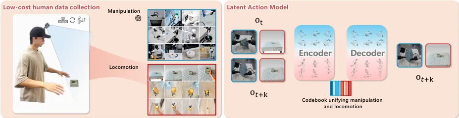
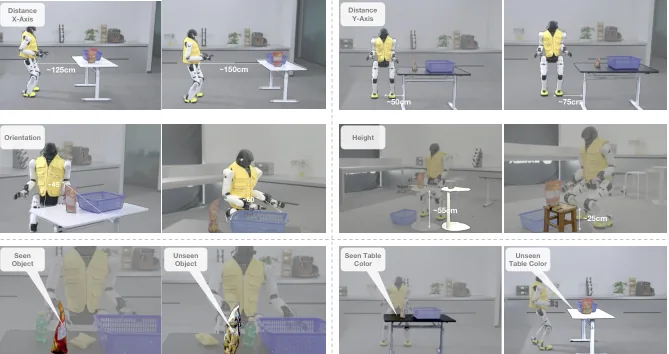
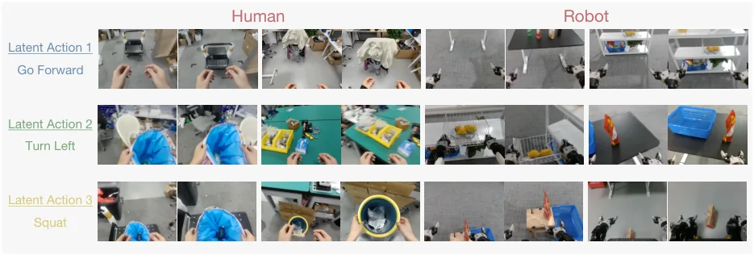

💡速记层 · 思想 / 逻辑 / 方法
默认读完就走的一层——只讲思想、逻辑、方法；效果只作验证。要核对原文/钻细节再看下面的「深读层」。
- 人形机器人 loco-manipulation 任务需要大范围移动 + 精准操作同时协调，模块化方案因为缺少闭环反馈和端到端联合优化会累积误差，机器人往往在移动后处于不利的操作构型。
- 端到端方案理论上更优，但全身遥操作数据成本极高，MoCap 和 VR+手柄都很贵；而现有 VLA 数据集（如 AgiBot World）只覆盖原地操作，缺乏 locomotion。
- 人类视频中已经隐含了 locomotion 方向、末端轨迹、物体 affordance 等信息——视频天然是 action-free 的廉价大数据。
- LAM（Latent Action Model）把相邻帧差异编码为 VQ-VAE 离散码字，作为伪动作标签监督 VLA 预训练——无需真实 action label，视频就能变成有效训练信号。
- 但 locomotion 和 manipulation 的视觉变化模式根本不同（摄像机静止 vs. 运动），分开训两个 LAM（manipulation LAM + locomotion LAM）再联合监督，避免混淆。
在 AgiBot X2 人形机器人（7-DoF 双臂 + 6-DoF 腿 + 1-DoF 腰）上验证三个任务（bag packing / box loading / cart pushing），WholeBodyVLA 平均成功率 78.0%，远超最强 baseline Modular Design 的 64.0%、GR00T w/ LMO 的 42.0%。消融证明 unified LAM 预训练和 LMO 控制器均为关键。
想看具体数字（点开）
- WholeBodyVLA: 78.0% vs. Modular Design: 64.0%（+21.3pp）
- 去掉 LAM 预训练：39.3%（-38.7pp）；仅用 manipulation LAM：63.3%；共享单 LAM：66.0%
- LMO vs. 速度追踪 RL：78.0% vs. 54.0%（+24pp），91.7% 的差距来自有 locomotion 的第二子任务阶段
- locomotion 泛化：50%+ 人类视频预训练后，25 条遥操数据即可匹配 <25% 视频预训练时 200 条数据的水平
- LMO 转向精度（终端偏差）：0.05±0.01 rad 方向误差，远优于速度追踪的 0.26±0.01
Track A（移动操作 VLA）直接命中：LAM 预训练用廉价视频替代遥操数据的思路，以及 VLA 统一输出上下身控制信号的端到端架构，是移动操作 VLA 的核心范式挑战。这篇是同时覆盖操作和 locomotion 的罕见案例，可直接借鉴统一潜学习框架。
Track B（足式算法）直接命中：LMO RL 控制器是一个非速度追踪的离散指令接口设计，两阶段 curriculum、结构化扰动（replay 真实手臂动作片段）、stand-still 惩罚等技巧直接针对人形机器人 loco-manipulation 稳定性——是足式控制算法中少见的、专为操作场景定制的 RL 控制器设计。
◆核心观点 · 证据
每条 = 中文论点 + 📍页/节 + 🔤逐字原文(Ctrl-F 锚点) + 🀄译文 + 💡解读。点开原文即可最短路径核对。
Yet existing approaches, modular or end-to-end, are deficient in manipulation-aware locomotion. This confines the robot to a limited workspace, preventing it from performing large-space loco-manipulation.
A naive solution is to serialize locomotion and manipulation with a high-level planner, selecting and switching between them (e.g., navigation vs. grasping). However, the limited closed-loop feedback and lack of end-to-end joint optimization could lead to error accumulation, resulting in robot configurations that are suboptimal for subsequent manipulation tasks.
However, these resources treat manipulation and navigation as separate tasks. In contrast, datasets that integrate humanoid locomotion with manipulation are almost few. Collecting such trajectories at scale, either via Motion Capture (MoCap) or teleoperation, is prohibitively expensive.

we focus on the pre-training stage of VLA and introduce unified latent learning, which acquires large-scale loco–manipulation priors from human egocentric videos and uses them as latent supervision for the VLA.
we find that directly training a single LAM on the mixed data yields suboptimal performance. We attribute this to the fundamentally different modalities of the two data sources: in manipulation videos the camera pose is almost static, whereas in locomotion videos it changes continuously.

At runtime, egocentric images and language instructions are encoded by the VLM into latent action tokens, which are decoded (∼10 Hz) into (i) dual-arm joint actions and (ii) locomotion commands executed by LMO at 50 Hz, enabling robust whole-body loco–manipulation.
We formulate lower-body control as goal-conditioned regulation, where the policy executes discrete high-level commands while maintaining balance. At each time step, the planner generates a command ut = [sx, sy, sψ, h⋆] ∈{−1, 0, 1}3 × R, where sx, sy, sψ denotes discrete indicators for forward, lateral, and turning, and h⋆specifies the stance height. Unlike velocity-based formulations, our interface enforces explicit start–stop semantics and reduces trajectory variance, improving the training process of both RL controller and high-level planner.
We adopt a two-stage training scheme that first acquires a minimal locomotion skill and then specializes it for precise and stable loco–manipulation.

the full model improves success rate by 38.7%, indicating that unified latent learning extracts useful priors from action-free human videos and enhances downstream policy learning.
with more than 50% human video pretraining, the model matches variants using less than 25% human videos even when fine-tuned with only 25 teleoperation trajectories, whereas the latter require 200 trajectories to achieve similar performance.

This unified prediction compels the model to learn how locomotion and manipulation interact in a single, cohesive action space to support task execution.
Comprehensive experiments on the Agibot X2 show that WholeBodyVLA surpasses prior baselines by 21.3% and 24.0%, while demonstrating strong generalization and broad task coverage.
⎘开源状态 · 实时核查（截至 2026-06）
已直接检查 github.com/OpenDriveLab/WholebodyVLA，结论如下：
- 代码
- 未开源 仓库目前仅包含文档、参考资料和社区资源链接，无可运行代码
- 权重
- 未开源 无任何模型 checkpoint 或预训练权重发布
- 数据
- 未开源 约 300h egocentric locomotion 视频及遥操数据均未公开；操作数据来源 AgiBot World（部分公开）
- 许可证
- MIT (仓库) 仓库本身 MIT license，但内容几乎只是文档
GitHub README 明确写道："We currently have no concrete timeline for open-sourcing the codebase. This repository now serves as a collection of resources and references for the whole-body humanoid VLA research community."——暂无开源计划，仓库定位是社区资源集合而非可用软件包。
See https://opendrivelab.com/WholeBodyVLA.
⚖批判 · 评级
这是首个将统一潜学习扩展到 locomotion + manipulation 的端到端 VLA 系统，在真实人形机器人（AgiBot X2）上完成了此前没有方案能做到的 large-space loco-manipulation（5m+ 行走 + 负重 50kg 推车）。方法论上有两个高价值创新：(1) 双 LAM 分治 + 联合预训练，巧妙绕开 loco-manipulation 数据稀缺；(2) LMO 离散指令 RL 控制器，将「接口设计」提升为系统性能关键因素——这两个思路都有很强的可移植性。
① 评测规模偏小：每个子任务仅 25 次试验，三个任务总计 150 次，且任务场景固定（同一实验室）。② 任务难度有限：bag packing、box loading、cart pushing 均为预设结构化场景，缺少非结构化环境验证。③ 完全不开源：无代码、无权重、无数据，无法复现或迁移到其他平台——对社区价值大打折扣。④ VLM 骨干未说明推理能力：基于 Prismatic-7B，但 VLM 在 loco-manipulation 中的贡献（语言理解 vs. 视觉感知）未做隔离消融。⑤ sim2real gap 未充分讨论：LMO RL 在 MuJoCo 训练后直接部署，Appendix 有失败案例统计但无 sim2real 迁移分析。
评级：Important 方法论上真正新颖，结果说服力较强，但评测规模和开源状况均有明显不足。作为 loco-manipulation VLA 的「原型系统」有重要参考价值，但还不是 Breakthrough 级别的范式转移。